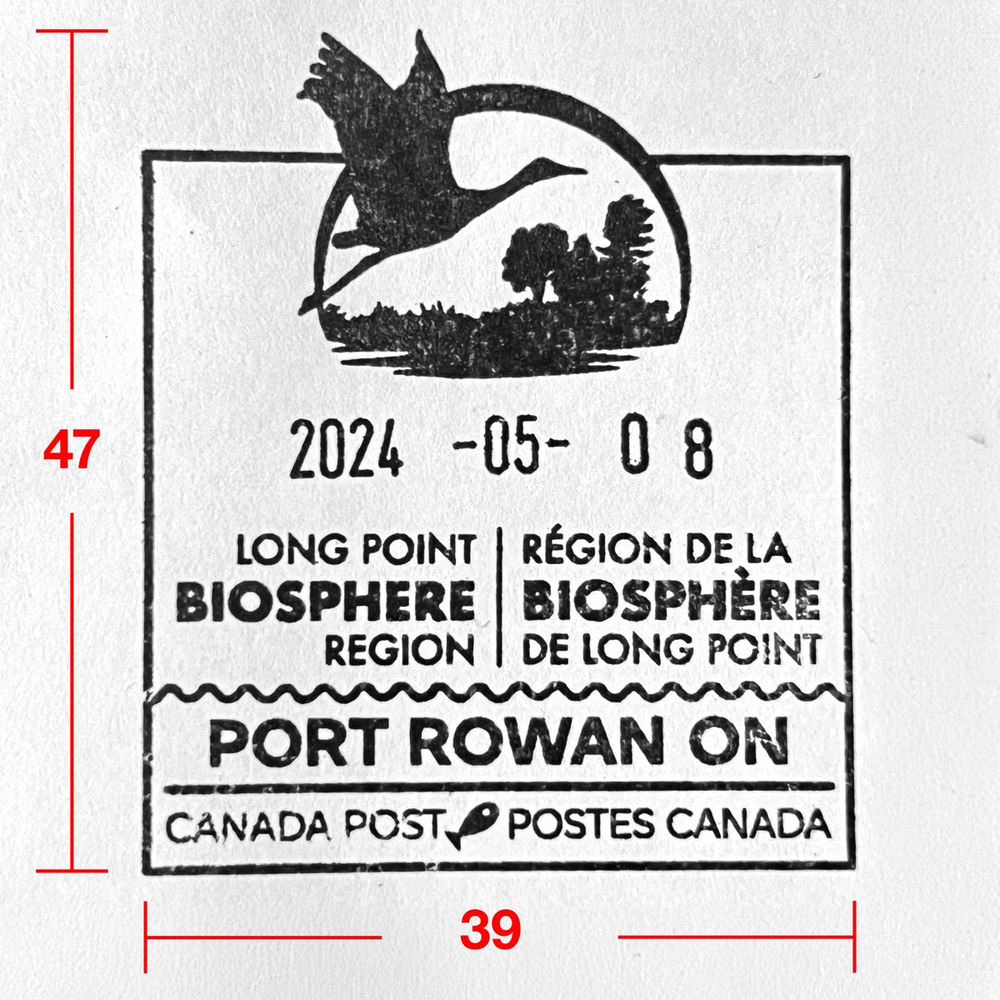

Port Rowan PO pictorial cancel
Long Point Biosphere Region – Région de la Biosphère de Long Point · Bird
- Status
- Active
- Run dates
- 2023-01-01 to 2034-12-31
- Design
- "LONG POINT BIOSPHERE REGION / RÉGION DE LA BIOSPHÈRE DE LONG POINT"; biosphere, bird, trees, lake
- Ink colour
- Black
- Designer
- Unknown
- Post office
- Port Rowan PO
5 Church St
Port Rowan, ON
N0E 1M0 - Subjects
- biosphere, animal, bird, crane, plant, tree, water, lake
Collect it by mail. Send your stamped covers, with a stamped return envelope, to the post office address above. How to collect pictorial cancels by mail · en français
 Port Rowan POFrog
Port Rowan POFrog Simcoe POWar Memorial Carillon Tower
Simcoe POWar Memorial Carillon Tower Port Burwell PONew
Port Burwell PONew Tillsonburg Main POOtter
Tillsonburg Main POOtter